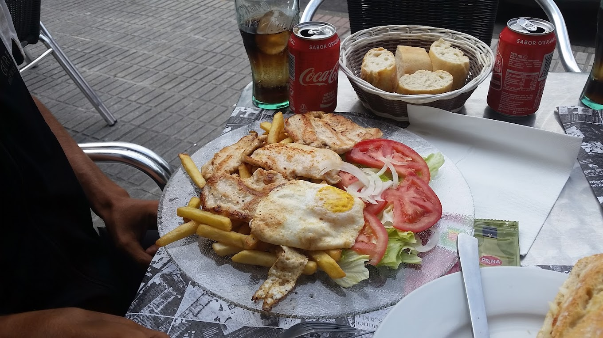

Restaurantes
Restaurantes mejor valorados
Se han recopilado una serie de restaurantes conocidos por su calidad ubicados en el concejo de Riosa.
| Restaurante | Localización | Especialidad | Puntuación |
|---|---|---|---|
| El Puente | C. la Magdalena, 1, 33160 La Ara, Asturias | Cordero | 8.6 |
| El Hogar | Tr. Sta. Bárbara, 33160 La Ara | Platos combinados | 9.2 |
| El Nuevo Lleron Riosa | C. la Mina, 33160 La Ara, Asturias | Parrillada | 8.8 |
| La perdiz | C. Río Llamo, 0 S/N, 33160, Asturias | Picadillo de jabalí | 7.6 |
Multimedia ofrecida por los restaurantes
Algunos restaurantes han subido a internet imágenes o vídeos dónde se puede ver la calidad de sus productos.
Vídeo del restaurante El Puente
Fotografía de plato de El Hogar
Los platos más típicos de Riosa, agrupados por tipo y de mejor a peor son:
- Carne
-
- Callos
- Cordero a la estaca
- Cachopo de cecina y queso de cabra
- Verduras
-
- Parrillada de verduras
- Berenjena asada
- Pimientos rellenos
- Legumbres
-
- Pote asturiano
- Fabada asturiana
- Cocido con compango